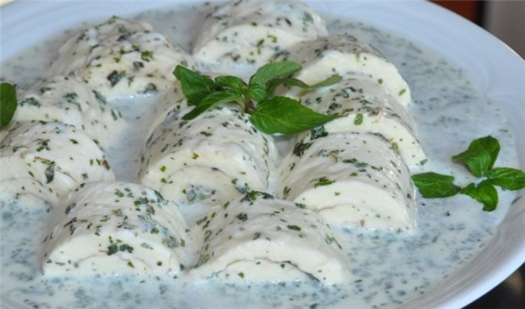

Gebjalia recipe

Gebzhalia (Georgian: გებჟალია) is a softened cheese dish from Georgia’s Samegrelo region. Traditionally prepared using cottage cheese, it can also be made with matsoni. In this recipe we have used matsoni. Matsoni (Georgian: მაწონი) is a fermented milk product very similar to yogur
It is smooth and creamy with a mild, slightly tart flavor. Popular in Georgia and throughout the Caucasus region, matsoni is rich in mineral content, protein and calcium and renowned for its health giving properties.
Ingredients
- Cheese
- matsoni
- green pepper
- mint
steps
- Chop the fresh mint and green peppers and remove skins from the garlic.
- Add the chopped mint and peppers, together with the garlic and salt, to a mortar and crush together using a pestle.
- Slice the cheese.
- Boil water in a large pot and add the cheese as soon as the water is boiling.
- Use a wooden spoon to smash the cheese with a wooden spoon. After 2 minutes, turn off the heat and continue to smash the cheese for another 2-3 minutes until the cheese is soft and flexible.